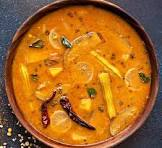

Sambar

Description
Sambar is a lentil-based vegetable stew, cooked with
pigeon pea and tamarind broth. It originates in South Indian cuisine
and is popular in large parts of India and beyond.
Ingredients
- Toor dal - pigeon peas
- Tamarind pulp
- Sambar powder
- Vegetables - carrot, potato, drumstick, etc.
- Mustard seeds
- Curry leaves
- Dry red chilies
Steps:
- Cook 1 cup of Toor dal until soft.
- Soak and extract tamarind pulp.
- Chop vegetables (carrot, potato, drumstick).
- Cook dal, tamarind, and veggies together.
- Add sambar powder, salt, and spices.
- Prepare tempering with mustard seeds, curry leaves, and dry chilies.
- Pour tempering over sambar and mix.
- Serve hot with rice or dosa.